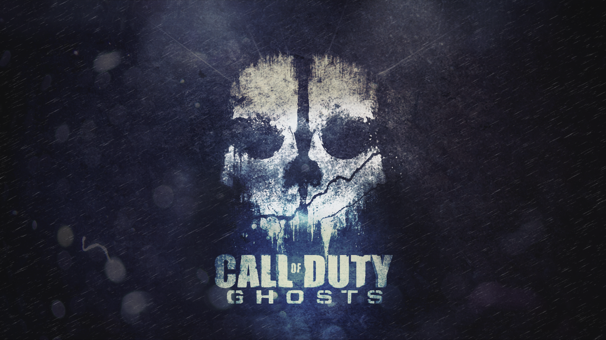
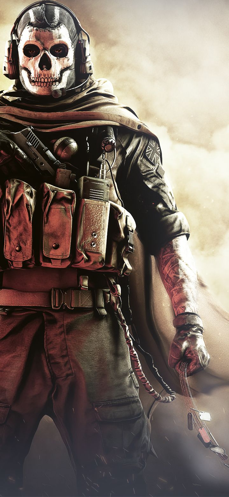
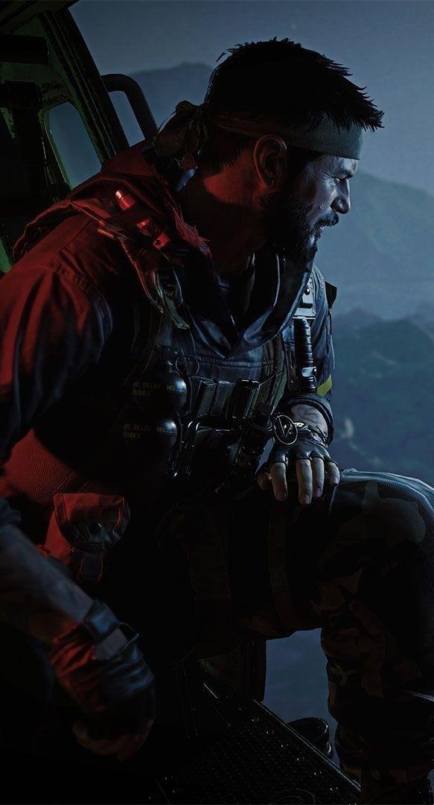
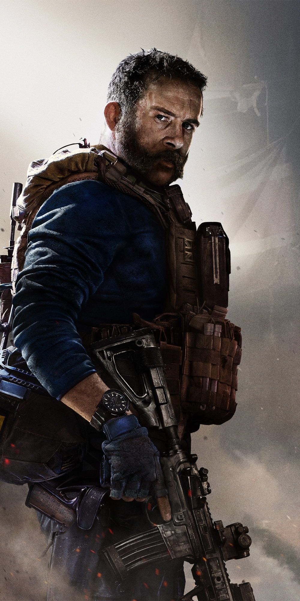
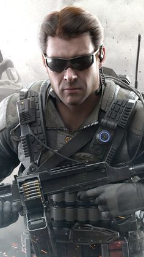
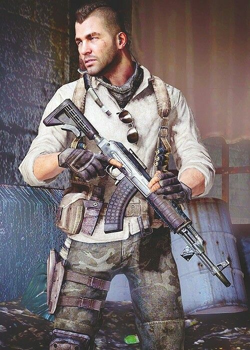

Welcome, web ini akan menampilkan penghargaan yang didapatkan pada Game Awards 2020 dan beberapa karakter favorit didalam Game Call Of Duty

Game Awards
Karakter Favorit :
- Simon "Ghost" Riley
- Frank Woods
- Captain John Price
- David "Section" Mason
- John "Soap" MacTavish
Game Awards 2020
Call Of Duty di gadang-gadang menjadi Game FPS dengan alur cerita terbaik pada masanya

Versi mobile dari game Call of Duty ini memang sukses menarik perhatian gamer sejak pertama kali rilis di tahun 2019. Hype yang diciptakan pun juga terasa hingga Indonesia. Di tahun 2019, game besutan Tencent dan Timi Studio Group ini menjadi salah satu nominasi di ajang The Game Awards, dan membawa pulang penghargaan untuk kategori Best Mobile Game.
Hal yang sama juga kembali terulang di tahun ini, dimana game tersebut kembali masuk kedalam nominasi Best Mobile Game untuk kedua kalinya.
Meski game Call of Duty Mobile memiliki banyak pesaing berat, namun faktanya game tersebut masih jauh dari kata sepi. Menurut lembaga survey SensorTower, game mobile first-person shooter ini telah meraup jumlah unduhan sebanyak 250 juta kali di seluruh dalam tahun pertama perilisannya, tepatnya pada bulan Juni 2020 kemarin. Bahkan menurut Wikipedia, Call of Duty Mobile berada di urutan ke-20 sebagai game mobile yang paling banyak dimainkan sepanjang masa.
Tentu saja, apabila sang developer terus memanjakan pemainnya lewat segudang update konten baru hingga perbaikan bug secara berkala, maka kesempatan mereka untuk kembali memenangkan ajang The Game Awards 2020 cukup besar.
Simon "Ghost" Riley
Simon Riley atau yang dikenal dengan Ghost adalah salah satu karakter di seri Modern Warfare.

Dengan ciri khas masker tengkoraknya, karakter berkebangsaan inggris ini bisa dibilang sebagai wajah dari Call of Duty tahun 2010-an. Kembali dalam reboot Call of Duty: Modern Warfare II, Ghost selalu menjadi misteri untuk banyak orang berkat topengnya.
Frank Woods
Frank Woods sendiri merupakan seorang sersan sekaligus agen pendukung dalam Call of Duty Black Ops Deuteragonist yang dapat dimainkan dalam misi 1980-an, hingga menjadi karakter utama dalam misi 2025 di Call of Duty: Black Ops 2

Tidak hanya itu saja, karakter ini menjadi salah satu karakter utama yang dapat dimainkan pada seri Call of Duty: Black Ops: Declassified, dan karakter pendukung di Specialist HQ serta karakter yang dapat dikostumisasi dalam Blackout di Call of Duty: Black Ops 4 dan sempat dihapus beberapa saat. Karena dorongan beberapa fans, Frank Woods akhirnya ditambahkan kembali pada Call of Duty Mobile pada 15 November 2020 selama musim 12 Going Dark sebagai bagian utama dari Frank Woods Bundle.
Captain John Price
Kapten John Price adalah karakter fiksi di seri permainan Call of Duty.

Dia adalah tokoh utama protagonis di sub-seri Modern Warfare. Di dalam trilogi cerita, Kapten Price berpangkat Letnant, sebelum dipromosikan menjadi Kapten dan memimpin skuat di Special Air Service (SAS). Dia kemudian memimpin pasukan khusus "141".
David "Section" Mason
“Inilah yang direncanakan Menendez selama ini. Mengeluarkan para pemimpin G20 akan melumpuhkan pemerintahan kapitalis Dunia."
-David Mason

Letnan Komandan David Mason (section) adalah karakter utama yang dapat dimainkan dan protagonis
dalam Call of Duty: Black Ops II. Dia adalah putra Agen CIA dan Kapten USMC Alex Mason, anggota SEAL Tim Enam, dan Komandan semua misi JSOC Strike Force dari
A.S.S. Barack Obama.
John "Soap" MacTavish

Kapten John "Soap" MacTavish adalah protagonis waralaba Modern Warfare ,
dan juga muncul dalam Call of Duty: Heroes ,serta Call of Duty Online .
Dia adalah karakter utama yang dapat dimainkan di Call of Duty 4: Modern Warfare dan Call of Duty
: Modern Warfare Remaster sebagai tentara sersan dan pasukan khusus,
melayani sebagai penembak jitu dan ahli penghancur SAS 22, dan Call of Duty: Modern Warfare 2 dan Call of Duty:
Modern Warfare 3 sebagai kapten dan Komandan Lapangan Task Force 141 , bersama dengan Kapten John Pricedengan Sgt.
Gary "Roach" Sandersondan Lt. Simon "Ghost" Riley di bawah komandonya.